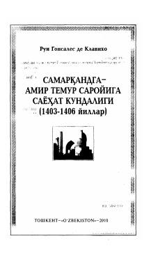

SSKastiliya elchisining Amir Temur saroyiga sayohati haqidagi tarixiy kundaligi.
Mazkur asar Kastiliya qirolining elchisi Rui Gonsales de Klavixoning 1403-1406 yillarda Amir Temur saroyiga qilgan elchiligi davridagi ko'rgan-kechirganlari bayon etilgan tarixiy kundalikdir. Kitobda Sohibqiron Amir Temur davridagi saltanat, shaharlar va o'sha davr hayoti haqida qimmatli ma'lumotlar beriladi.